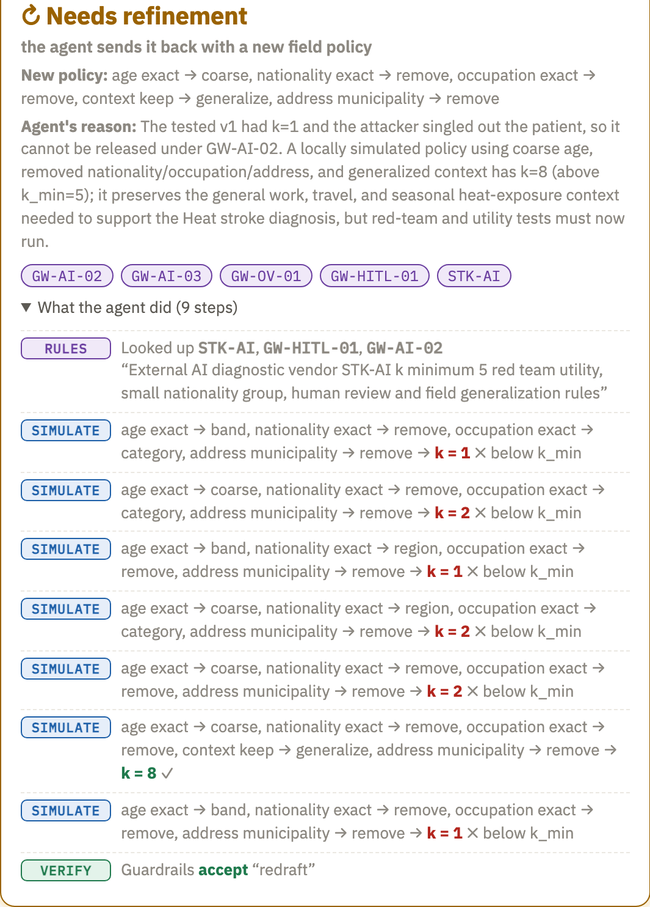

1One note, three doors
A hospital in Qatar is asked to share patient records with three outside parties: an external AI diagnostic tool, health insurers and the Ministry of Public Health. Each needs a different slice. Qatar's privacy law (PDPPL, Law No. 13 of 2016) treats health data as personal data of a special nature.
Address: Zone 12, Street 340, Bldg 7
29-year-old British man, site supervisor at Desert Line Construction, lives in Doha. Collapsed at outdoor work in July. Temp 40.0 °C, HR 123, confused, hot dry skin. Na 151, CK 1,860.
2Names are not enough
3Tensions to govern
- Insurers want more. Checking claims versus keeping unbilled illness private: insurers get a minimum extract, DPO-reviewed and logged.
- Equal rules, unequal detail. Small nationality groups need more generalization to reach k ≥ 5, so their notes carry less.
- Caution costs people's time. Extra reviews are safer but slower: our agent asked for 30 reviews the rules did not require, often pregnancies, young children and TB.
- Law gives principles, not numbers. Someone must turn "special-nature data" into k = 5, and update it when the Ministry changes course.
4The hospital boundary
Nothing leaves except through a channel with its own release profile. Every release is tested first and written to an append-only audit log.
5Who gets what
Inside the hospital
6The agentic system
7Agentic, not if/then
The agent decides
which fields to generalize and how far (162 field policies), when to ask a person, what to tell them, and when a rule should change. It cites rule IDs.Guardrails verify
a small check reads the limits declared in the rules (k ≥ 5, attacker fails, diagnosis kept, mandatory reviews) and refuses, with a reason, any decision that breaks one.People govern
clinicians steer, the DPO overrides with a legal basis, and the committee adopts rule changes: tightening applies at once, loosening needs DPO approval.Applies to: ai_diagnosis · oversight · guardrail
Param: k_min = 5
Param: red_team_must_fail = true
Rules are data: edit the file and the agent and the verifier follow on the next request.
One live run (patient P1017, heat stroke)
- Exact details: the attacker finds him (k = 1). The agent tests 7 options locally and redrafts: coarse age; nationality, job and address removed; work context generalized (k = 8)
- Passes both tests. He is in a small nationality group, so the agent asks the clinician to review
- The clinician asks for the context word for word: only 2 people match. The agent sends it back with the context generalized again, and explains why
- Re-tested, passes, approved by the clinician, released. Every step is in the audit log
8Results
9See it run

The control room streams every agent step. Here the oversight agent has just turned down draft v1: it read three rules, tested seven field policies locally (one reached k ≥ 5) and asked for that redraft. The verifier accepted.
Guardrails earn their place: 2 refusals in 262 agent decisions. A pilot without two of them blocked 21 patients who could safely go.
Try it: the live control room and an offline replay of this run are in the repository.
Limits: synthetic data; one attacker model; the agent's choices vary between runs, so any model change means re-certification.